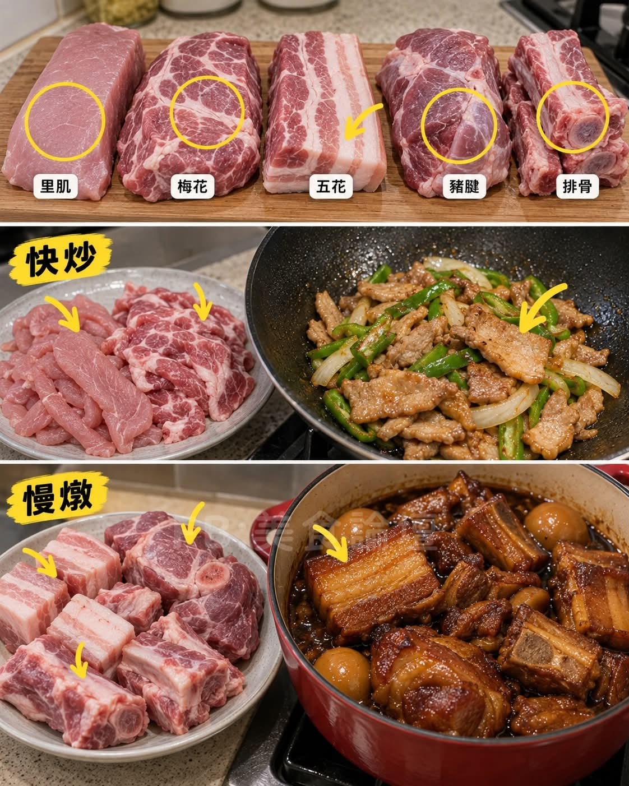

炒定燉，買之前先決定

脂肪少、肉質細嫩，切薄片炒肉絲、滑肉片最啱。但最怕乾：薄片用大火一直炒，等配菜熟晒先起鑊，肉早就柴。做法：逆紋切厚薄一致嘅肉片，用少量醬油、米酒同太白粉抓醃；鑊熱分批落肉，炒到表面變色、接近熟透先盛起；蔬菜炒好之後再將肉回鑊，快速炒到全熟即起鑊。里肌唔係完全唔可以燉，但薄片長時間煮，好難保住快炒嗰種嫩度。
瘦肉之中分布住細緻油花，比純瘦嘅里肌多汁，炒肉片、煎燒肉、日式薑汁燒肉都適合。但有油花唔代表可以隨便久炒：切薄片一樣要控制火候；切厚塊就可以改用燉煮，令結締組織慢慢軟化。同一塊梅花肉，切法同時間唔同，口感可以完全唔一樣。
肥瘦層次分明，做滷肉、紅燒肉，燉到肥肉柔軟、瘦肉吸滿醬汁就最正。但五花肉唔一定要滷兩個鐘：切薄片炒蒜苗、炒高麗菜一樣好食。關鍵係厚度——薄片適合快速煸香，厚塊就需要時間令脂肪同結締組織逐漸軟化。最忌厚厚一塊五花肉當薄肉片咁隨便炒幾下，就期待佢軟嫩。
活動量較大，結締組織通常比里肌多，唔同位置嘅筋膜同脂肪分布都有差異。筋膜較少嘅部分，切薄片或肉絲可以快炒；筋膜較多、比較結實嘅部位，滷、燉會更適合。買前腿肉最容易犯嘅錯，就係只睇瘦唔瘦，完全忽略入面有幾多筋。買之前同肉檔講清楚要炒肉絲定燉肉，比淨係講「要一塊瘦肉」實際得多。
筋腱同結締組織明顯，肉質緊實，直接厚切快炒好容易又硬又難咬。但換成小火慢滷就完全唔同：結締組織入面嘅膠原蛋白喺適當濕熱同時間下逐漸轉成明膠，肉會變軟，仲帶獨特嘅筋肉口感，滷豬腱、紅燒、燉湯都啱。不過慢燉唔係越耐越好——燉到筋軟、肉輕鬆咬得斷就夠，繼續燉到肌肉纖維全部散開，瘦肉部分反而會變乾柴。
小排、肋排、帶軟骨嘅排骨，肉量、脂肪同結締組織都唔一樣。想做糖醋排骨，揀適合切小塊、容易煮熟嘅部位，先處理到熟透再快速裹汁；想煮排骨湯，揀帶骨、帶啲筋膜同肉嘅部位，小火慢慢燉出風味。厚厚嘅帶骨排骨直接當薄肉片快炒，外面乾晒，近骨頭嘅位置可能仲未熟透。
1. 睇筋膜：筋膜少、肉質細嫩嘅部位，通常適合短時間料理；筋膜明顯、結締組織多嘅部位，往往更適合濕熱慢燉。
2. 睇油花：油花適中嘅肉，通常比較容易保持多汁；脂肪好少嘅瘦肉，快炒時尤其要小心唔好過度加熱。
3. 睇厚度：同一種肉，薄片同厚塊適合嘅加熱時間完全唔同——薄片快炒，厚塊就要按部位調整煎、燉或滷嘅時間。
4. 睇料理目的：想食滑嫩肉片，就揀適合快炒嘅部位；想食軟嫩滷肉，就揀有適量脂肪同結締組織嘅部位。唔好買完肉先硬將所有煮法套上去。
炒肉硬，唔一定係火唔夠大——好多時係炒太耐，水分流失就變柴。燉肉硬，唔一定係時間唔夠——火力太猛、液體不足，或者瘦肉長時間過度加熱，一樣會越煮越乾。真正識煮肉，唔係永遠追求大火或者小火，而係知道呢塊肉需要乜嘢。
買豬肉最值得問嘅，唔係單純一句「呢塊嫩唔嫩」，而係先決定今日要做乜菜，再揀適合嘅部位。同樣一塊肉，有人炒得香嫩，有人煮得乾柴，差別往往唔係調味，而係有冇用啱方法。
整理自 Facebook「美食論壇」2026-10-27 帖文，內容經重新整理濃縮。